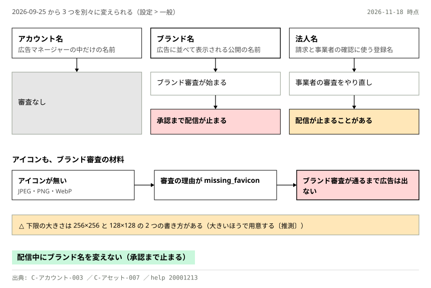

[ ChatGPT / 05 ]
05広告とクリエイティブ
位置づけ: ChatGPT の広告 1 枚（チャット カード）の中身、文字数・画像・ブランド名とアイコンの決まり、OpenAI が自動で文面を変える「クリエイティブの強化」、商品フィード起点の広告、スポンサーのビジネス エージェント、画像生成中の広告、そして公式が言っている「書き方」を引くメモ。Google の ../Google広告の基礎/05_広告文とアセットとポリシー.md（以下 G05）と 29_広告文とクリエイティブの作り方.md（G29）に当たる
このメモについて
- 確認日: 2026-11-18（help.openai.com の広告の作成・クリエイティブの強化・基本・利用者向けの広告の説明・一括入稿の点検表・入稿の手順・トラブルシューティング・商品フィードのキャンペーン・スポンサーのビジネス エージェント・アカウントの設定の各ページを、Claude のアプリ内のブラウザ（自分専用のタブ）で本文まで読んだ。developers.openai.com…
- 位置づけ: ChatGPT の広告 1 枚（チャット カード）の中身、文字数・画像・ブランド名とアイコンの決まり、OpenAI が自動で文面を変える「クリエイティブの強化」、商品フィード起点の広告、スポンサーのビジネス エージェント、画像生成中の広告、そして公式が言っている「書き方」を引くメモ。Google の
../Google広告の基礎/05_広告文とアセットとポリシー.md（以下 G0… - 使い方: 変化が速い（複数画像は 2026-10-26、クリエイティブの強化の既定オンは 10-30、ビジネス エージェントは「今後数週間で展開」）。確認日から 2 週間を過ぎたら出典を取り直す
- 凡例: ✓ 公式で確認 ／ △ 資料によって食い違う ／ ? 確認できず
- 主張の出どころの印: 公式〔画面〕（62 の記録）〔報道〕〔第三者〕〔推測〕
地図
本文
0.先に結論
- 01
広告の単位は「チャット カード」1 枚。 ブランド名・アイコン・タイトル・説明（本文）・LP・画像（1 枚か正方形 4〜6 枚）。回答の下に、回答と分けて「スポンサー」と表示され、1 回の回答に出るのは 1 ユニット ✓ S-31、S-30（本文）
- 02
文字数は 3 つの数字がある。 入稿の上限はタイトル 50・本文 100 字（開発者文書・ヘルプ）。推奨はタイトル 16〜24・本文 32〜48 字（一括入稿の点検表）。日本の画面の目安はタイトル 32・説明 54 字で、全角も 1 字。超えると「一部の配置では切れる場合がある」と警告が出る（〔画面〕62#3・#4）
- 03
組み合わせを機械に試させる仕組み（レスポンシブ検索広告の 15 見出し）は無い。 公式の勧めは「1 つの商品に、角度の違うタイトル・本文の組を何本も」入れて、システムが合う場面を見つけられるようにすること ✓ S-41（本文）
- 04
クリエイティブの強化は既定でオン（2026-10-30 から、セルフサーブと BPO）。 会話の文脈・利用者の興味・既存の広告・LP の中身から、見出しと説明の書き換え・新規作成、別の言語への翻訳、画像のサイズ調整、リンク先 URL の変更を、1 本ずつの確認なしに配信する。営業が管理するアカウントは対象外 ✓ S-43（本文）、〔画面〕62#10
- 05
商品フィード起点の広告は、テンプレート 1 つで商品ごとのカードを組み立てる。 1 枚か横並び（カルーセル）かは OpenAI が自動で選ぶ。標準の商品ファイルの形式は今は米国向け ✓ h20001268、S-03
- 06
スポンサーのビジネス エージェント（広告から企業の AI と会話）は、ヘルプでは「対象の広告主へ今後数週間で展開」で、国の限定は書かれていない。発表（09-16）は「米国で一部の広告主とテスト」 △ S-49、S-15
- 07
「会話の文脈に合う見出し」の公式の手本は、クリエイティブの強化の例（「生鮮食品をお届け」→ 平日の夕食の会話で「平日の手早い夕食に使える食材を」）。同じ商品を、その場面の用途に結びつけて言い直すこと ✓ S-43
1.Google との対比（G05・G29 と）
- 角度の違う広告を何本も作る
- 全角は 2 字
- 全角も 1 字
- キーワード
- クリエイティブの強化
- 翻訳・リンク先の変更も
| 観点 | Google 広告（G05・G29） | ChatGPT の広告 | 運用の判断への効き方 |
|---|---|---|---|
| 広告の単位 | レスポンシブ検索広告（見出し 3〜15、説明文 2〜4）。表示は見出し最大 3・説明文最大 2 の組み合わせ | チャット カード 1 枚: タイトル 1・本文 1・画像・LP。ブランド名とアイコンはアカウントから ✓ S-01、S-31 | 組み合わせの最適化は無い。角度の違う広告を何本も作るのが代わり（S-41） |
| 文字数 | 見出し半角 30（全角 15）、説明文半角 90（全角 45）。全角は 2 字 | タイトル 3〜50、本文 100 まで（characters）。日本の画面では全角も 1 字、目安はタイトル 32・説明 54 〔画面〕62#3 | 日本語では Google より長く書ける。ただし 32・54 を超えると切れる |
| 広告の数 | 有効なレスポンシブ検索広告は広告グループに最大 3 | 広告グループあたりの上限は ?。アカウントの上限は広告 5,000（S-42、h20001209） | 1 広告グループに角度違いを複数置ける（数の上限は確かめる） |
| 固定（ピン留め） | ある | 無い（? 記載なし）。クリエイティブの強化をオフにするのが「文面を固定する」唯一の手段〔推測〕 | 決まった言い回しを守りたいならオプトアウト |
| 広告の有効性（Ad Strength） | ある（段階評価） | ? 記載なし | 品質の目安が画面に出ない。CTR・CPC で見る〔推測〕 |
| アセット（サイトリンク等） | サイトリンク・コールアウト・画像・ビジネス情報など | 無い（? 記載なし）。CTA は複数画像の広告で「Learn more（詳細を見る）」だけ ✓ S-41、〔画面〕62#5 | 情報は本文と LP に寄せる |
| 自動で文を作る機能 | テキストのカスタマイズ（AI Max）。LP・既存の広告・キーワードから。48 時間ごとに見直し。オフにできる | クリエイティブの強化: 会話の文脈・利用者の興味・既存の広告・LP から。翻訳・リンク先の変更も。事前確認なし。オフにできる ✓ S-43 | Google と違い、会話ごとにその場で変わることがある（「事前に用意されるか、会話に応じてリアルタイムで作られる」） |
| リンク先の自動変更 | 最終ページ URL の拡張（FUE）。URL の除外・登録で制御 | クリエイティブの強化の中の「リンク先 URL の最適化」（サイト内の関連するページへ）。除外する URL を指定する手段は ? 記載なし | 行かせたくないページがあるサイトは、強化をオフにするしかない〔推測〕 |
| キーワードの挿入 | {KeyWord:} | 無い（キーワード自体が無い） | — |
| 審査 | 広告・アセット・LP | 広告ごと（タイトル・本文・画像・LP）。文面を変えると再審査 ✓ S-01、S-19 | 頻繁な文面の差し替えは審査待ちを生む〔推測〕 |
| 画像 | レスポンシブ ディスプレイ広告・画像アセットの複数比率 | 1 枚（JPEG・PNG・WebP、640×640 以上）か正方形 4〜6 枚。△ 一括入稿は「正方形・PNG／JPG・1200×1200 以下」 | 正方形で作っておけば両方に使える〔推測〕 |
| 回答・検索結果との関係 | 検索結果の上下（AI による概要の中の広告は日本では未提供） | 回答の下に分けて出す。広告は回答に影響しない。広告システムが「前置き文」（広告と会話の関係を説明する短い中立の紹介文）を別に作る ✓ S-30、S-18 | 広告文で「回答の続き」を装わない（ポリシーで禁止。§7-3） |
2.チャット カードの要素
- 1 つの広告ユニット
- モデルが生成した前置き文
- 「広告を返さないことも想定どおりの正常な結果」
- カードに載るのはタイトルと説明だけ
- 前置き文は OpenAI 側が作る
2-1.見た目と構成 ✓公式S-31（本文、2026-11-15 ごろ更新）、S-01、〔画面〕62#5

広告は回答の下に「スポンサー」と分けて 1 つ出て、回答には影響しない（OpenAI の説明）。日本の管理画面の目安はタイトル 32 字・説明 54 字（全角も 1 字）で、開発者文書の上限 50・100 字まで書くと配置によって「…」で切れるので、要点はタイトルの前半に置く。
出典: C-利用者-007・C-広告-001・C-広告-002 ほか 9 件 · 2026-11-18 時点
表で見る（8 行。上の図のもとの表）
| 要素 | 中身 | どこで決めるか |
|---|---|---|
| 広告主名 | ブランド名（アカウントの「ブランド名」） | アカウント |
| ファビコン（広告主のロゴ） | アイコン | アカウント |
| タイトル（見出し） | 3〜50 字 | 広告 |
| コピー（説明） | 100 字まで | 広告 |
| LP | HTTP(S)、2,048 字まで、OpenAI の広告クローラーが読めること | 広告 |
| 画像 | 1 枚、または正方形 4〜6 枚 | 広告 |
| 「広告」「スポンサー」の表示 | 回答と分けて表示 | 自動 |
| CTA | 画面のプレビューは「詳細を見る ↗」。複数画像の広告は「Learn more」だけ | 自動（選べない） |
- ✓ 回答の下に出る。1 回の回答の下に見るのは 1 つの広告ユニット（画像は 1 枚か複数）（S-30、本文、2026-11-03 ごろ更新）
- ✓ 技術ブログ（S-18 日本語版、2026-10-21）: 広告クリエイティブは「タイトル、説明、リンク先、行動喚起」。広告システムは別に、モデルが生成した前置き文（広告と会話の関連を説明する、短く中立的な紹介文）を返し、クリエイティブと一緒に表示する。広告主のメッセージを保ちつつ ChatGPT の語り口を中立に保つため
- ✓ 回答の生成が終わる前に広告が届かなければ、そのターンでは表示しない。「広告を返さないことも想定どおりの正常な結果」（S-18）
- ✓ 広告の言語は、会話や画面の言語と違うことがある。言語の選択は地域・言語の設定・会話の言語を考える（S-30）
- ✓ 利用者は広告の「…」から「ChatGPT に聞く」で広告を会話に共有できる。既定では ChatGPT は表示された広告を見ていない。共有された広告についての回答に広告主は影響しない（S-30）
- ? 前置き文を広告主が見る・止める手段、その文面の審査は記載なし
2-2.運用の判断への効き方
サイトリンクのような追加の枠は無いので、伝えたいことは「タイトル → 説明 → LP」の順に置く
ので、タイトルで「〜についてお探しなら」のような会話の受けを書く必要は薄い〔推測〕
広告が出ないターンがあるのは仕様。表示回数が少ないことを「入札負け」とだけ読まない〔推測〕（02 §8）
3.文字数
- 全角も半角も 1 字
- 日本語の情報量は Google の見出しの 2 倍ほど入る
- タイトルは 32 字以内、説明は 54 字以内
- 切れる場所の数字が見えるのは、4 媒体の中で ChatGPT だけ。ただしそれは
- 画面で確かめたこと
- タイトル 32 字・説明 54 字
3-1.3 種類の数字
| 数字 | タイトル | 本文（説明） | 何の数字か | 出典 |
|---|---|---|---|---|
| 入稿の上限 | 3〜50 字 | 100 字まで | API が受け付ける範囲 | ✓ S-01（Ads の作成の表） |
| 推奨 | 16〜24 字 | 32〜48 字 | 一括入稿の点検表・入稿の手順の推奨（最大 50・100 も併記） | ✓ S-42（本文）、h20001209（本文） |
| 日本の画面の目安 | 32 字 | 54 字 | 超えると「一部の配置では広告文が切れる場合があります」と赤字。プレビューでは 32 字を超えた部分が「…」 | 〔画面〕62#3・#4 |
- 〔画面〕全角も半角も 1 字と数える（全角 5 字を含む 46 字のタイトルが「46/32」）（62#3）
- ✓ 広告の名前（管理用）は 3〜1,000 字で、利用者には見えない（S-01）
- ? 推奨の 16〜24・32〜48 は英語の characters の話。日本語での推奨は記載なし
- △ 32・54（画面）と 50・100（文書）の関係: 32・54 は「切れずに出る目安」、50・100 は「入稿できる上限」と読むのが筋〔推測〕（62#4）
3-2.Google との違い
- Google は全角を 2 字と数え、見出しは全角 15 字まで。ChatGPT は全角も 1 字で、タイトルの目安は 32 字。日本語の情報量は Google の見出しの 2 倍ほど入る〔推測: 15 字と 32 字の比較〕
- Google は長すぎると「...」で切られる。ChatGPT も 32 字を超えると「…」で切れる（〔画面〕）
3-3.運用の判断への効き方
- タイトルは 32 字以内、説明は 54 字以内に収める。言いたいことはタイトルの前半に置く（62 §2）
- 英語の推奨（16〜24）に合わせて日本語を短く削りすぎない〔推測〕。公式の勧めは「具体的で、何に役立つかが分かる」こと（§7）で、短さそのものではない
3-4.どこで切れるか（2026-11-19 追記）

切れずに出る目安を数字で示せるのは ChatGPT（日本の管理画面）だけで、Google・LINEヤフー・Meta は「場所が足りなければ短くする」としか書いていない。どの媒体でも、言いたいことは各文の前半に置き、必ず見せたい表記は固定の位置（Google の見出し 1・2／説明文 1、LINEヤフーのタイトル 1・2／説明文 1）か画像の中に入れる。
出典: Google広告の基礎/05 §1-1（7684791・9566341・148778）・M-アセット-011・M-アセット-018 ほか 15 件 · 2026-11-19 時点
結論: 切れる場所の数字が見えるのは、4 媒体の中で ChatGPT だけ。ただしそれは日本のアカウントの管理画面（〔画面〕62#3・#4）で、公開の文書・ヘルプには「切れる」という記述が無い。公開の文書が書くのは入稿の上限（50・100）と推奨（16〜24・32〜48）だけ。
画面で確かめたこと〔画面〕
- 目安はタイトル 32 字・説明 54 字。全角も半角も 1 字と数える（全角 5 字を含む 46 字のタイトルが「46/32」）
- 目安を超えても入稿はできる。超えると「一部の配置では広告文が切れる場合があります」と赤字の警告が出る。プレビューでは 32 字を超えた部分が「…」で切れた
- 「一部の配置」がどの配置か（端末・画面の幅・アプリかウェブか）は画面に書かれていない ?
公式に言えること ✓公式本文（2026-11-19 に取り直した）
- 開発者文書（S-01）: タイトル 3〜50 字（"chars"）、本文 100 字まで。文書の全文（llms-full.txt）に、広告文の切り詰め（truncate）や省略記号の記述は無い（"truncate" が出るのはオーディエンスの値の話だけ）
- 開発者文書（S-01）: API のプレビューは見た目だけで、配信できるかは示さない（"A preview shows appearance; it does not confirm serving eligibility"）。プレビューは作ってから 24 時間で切れる
- ヘルプ「Creating ads for ChatGPT Ads」（S-41、英語版）: タイトルは簡潔に、推奨の文字数の中に収める、とだけ書く。数字は無い
- ヘルプ「Bulk Upload Campaign Schema Checklist」（S-42、英語版）: タイトル 16〜24 字を推奨・最大 50、本文 32〜48 字を推奨・最大 100
- ヘルプ「キャンペーンの開始」（h20001209 の日本語版 help.openai.com/ja-jp/、2026-11-19 に初めて確認）: 「広告タイトル（16〜24 文字を推奨、最大 50 文字）」「広告コピー（32〜48 文字を推奨、最大 100 文字）」と、英語版と同じ数字を「文字」と書く。全角の数え方は書かれていない。同じページの点検の節は「広告タイトルとコピーが文字数制限内であること（タイトル: 16〜24 文字、コピー: 32〜48 文字）」と書き、推奨の幅を「制限」と呼んでいる △
- クリエイティブの強化（既定でオン、§6）は見出し・説明を書き換えるので、入れた長さのまま出るとは限らない（S-43）
公式に無く、第三者だけが言っていること
- 今回の検索では、ChatGPT の広告で何字から切れるかを計測した第三者の記事は見つからなかった
分からないこと ?
- 画面の 32・54 と、文書の 50・100・16〜24・32〜48 の関係（画面の目安は 1 つのアカウントで見たもので、公開の文書に 32・54 の数字は無い）
- どの配置（スマホのアプリ・パソコンのウェブなど）で切れるのか。切れたかどうかをレポートで見る手段
- 日本語版ヘルプの「16〜24 文字」を全角で数えてよいか（英語版の訳で、全角の扱いの記述は無い）
運用の判断への効き方
- タイトルは 32 字、説明は 54 字に収める（全角も 1 字）。50・100 まで書けるのは「入る」というだけで、32・54 を超えた分は配置によって切れる（〔画面〕）
- 英語の推奨（16〜24・32〜48）は、日本語版ヘルプにも同じ数字が出るが、全角での扱いが書かれていない。短く削る目安は 32・54 の画面の数字のほうに置き、言いたいことはタイトルの前半に〔推測〕
- プレビューで切れていないことを見ても、配信される文はクリエイティブの強化で変わりうる。言い回しを固定したい案件は強化をオフにする（§6-6）
4.画像
- 640×640 以上
- PNG か JPG、正方形、1200×1200 以下
- 形式と大きさの決まりが 2 つある
- 正方形（1:1）を 4〜6 枚
- 同じ広告主の複数画像の広告
- 画像ができ上がると広告は消える
4-1.1 枚の画像
| 項目 | 中身 | 出典 |
|---|---|---|
| 形式・大きさ（API） | JPEG・PNG・WebP、640×640 以上 | ✓ S-01 |
| 形式・大きさ（一括入稿・トラブルシューティング） | PNG か JPG、正方形、1200×1200 以下。公開で直接開ける URL（Google ドライブの公開リンク、S3・CloudFront、自社ドメイン・CDN） | ✓ S-42、h20001217（本文） |
| 切り抜き | API に image_crop がある（1 枚の広告だけ） | ✓ S-01 |
| 画面の表示 | 広告フォーマット「1 枚の画像」 | 〔画面〕62#5 |
- △ 形式と大きさの決まりが 2 つある。 API は「WebP も可・640×640 以上」、一括入稿とトラブルシューティングは「PNG／JPG・正方形・1200×1200 以下」。〔推測〕両方を満たすのは「正方形の PNG か JPG、640〜1200 px 四方」
- ✓ 画像の勧め（S-41、本文、2026-10-29 ごろ更新）: シンプルで関係のある画像、抽象的すぎる・ごちゃごちゃした画像を避ける、タイトルと説明に合った画像で 1 つのまとまりに見せる
4-2.複数の画像（2026-10-26 から広告マネージャーでオープン ベータ）
| 項目 | 中身 | 出典 |
|---|---|---|
| 枚数・形 | 正方形（1:1）を 4〜6 枚 | ✓ S-41、S-01 |
| 共通のもの | タイトル・本文・リンク先は全画像で 1 つ | ✓ S-41、S-01 |
| CTA | 「Learn more」だけ。どの画像を押しても同じ URL | ✓ S-41 |
| 使えるキャンペーン | 標準のキャンペーンの表示・クリック・コンバージョン | ✓ S-41、S-01 |
| 条件 | アカウントで複数画像が有効になっていること。自動入札で使うには「複数画像＋自動入札」も有効になっていること（そうでなければ固定の入札） | ✓ S-01 |
| 使えない組み合わせ | image_crop・価格（price）・ビジネス エージェント（business_agent_id）とは一緒に使えない | ✓ S-01 |
| 変更 | 1 枚の広告を複数画像の広告に変えるには、新しい広告を作る | ✓ S-01 |
4-3.画像の生成中の広告（テスト）✓公式S-30（本文）
- ChatGPT が画像を生成している間に、同じ広告主の複数画像の広告を見せる形式をテストしている。広告と明示し、作っている画像とは分けて表示する。広告を押すと広告主のリンクが開く。画像ができ上がると広告は消える
- ? 広告主がこの面に出す・出さないを選べるか、レポートで分けて見られるかは記載なし
- 運用の判断への効き方: 複数画像の広告を作っておくと、この面にも使われうる〔推測〕。画像の生成が終われば消えるので、1 枚目の画像だけで何の広告か分かるようにしておく〔推測〕
5.ブランド名とアイコン
- ブランド名
- 広告に並べて表示される公開の名前
- ブランド審査が始まり、承認まで配信が止まる
- 止まることがある
- ブランド審査が通るまで広告は出ない
- 運用の判断への効き方
5-1.3 つの名前 ✓公式S-39（本文、2026-11-18 更新）、S-01

名前は 3 つあり、アカウント名の変更は審査なし、ブランド名の変更は承認まで配信が止まり、法人名の変更は事業者の審査のやり直しで止まることがある。アイコンが無いとブランド審査が通らず広告が出ないので、広告主ごとのアカウントを作るときは、ブランド名とアイコン（256×256 以上〔推測〕）を最初に決めてから出稿する。
出典: C-アカウント-003・C-アセット-007・C-審査-001 ほか 5 件 · 2026-11-18 時点
| 名前 | 役割 | 変えたとき |
|---|---|---|
| アカウント名 | 広告マネージャーの中だけの名前 | 審査なし |
| ブランド名 | 広告に並べて表示される公開の名前 | ブランド審査が始まり、承認まで配信が止まる |
| 法人名 | 請求と事業者の確認に使う登録名 | 事業者の審査をやり直し、止まることがある |
- ✓ サインアップで入れた広告主名が 3 つすべてに入る。2026-09-25 から別々に変えられる（設定 > 一般）（S-39）
- ✓ ブランド名は「広告にどう出したいか」で決め、法人名は登録名を入れる（S-39）
5-2.アイコン（ファビコン）
| 項目 | 中身 | 出典 |
|---|---|---|
| 形式 | JPEG・PNG・WebP | ✓ S-01 |
| 大きさ | △ 「256×256 以上」（アカウントの節）と「128×128 以上」（パートナー向けの設定手順の節）の 2 つ | △ S-01 の中で食い違う |
| 無いとき | ブランド審査の理由が missing_favicon になり、ブランド審査が通るまで広告は出ない | ✓ S-01 |
| 自動取得 | API ではサイトの URL を渡すとアイコンを探して取り込める | ✓ S-01 |
| 画面 | 設定 > 一般 でロゴを確認・更新 | ✓ S-39 |
- 運用の判断への効き方: アイコンは 256×256 以上の正方形で用意する（大きいほうの数字に合わせる）〔推測〕。ブランド名は配信中に変えない（止まる）。代理店が広告主ごとにアカウントを作るときは、最初にブランド名とアイコンを決めてから出稿する
6.クリエイティブの強化（既定でオン）
- 新しい文・書き換えた文
- 別の言語に翻訳
- サイズを変える
- 関連するページへ向けて最適化
- 会話の文脈か利用者の興味、既存の広告、広告の LP の中身
- 2026-10-30 から、新規と既存のセルフサーブと BPO のキャンペーンで既定でオン。営業が管理するアカウントは対象外
6-1.何をするか ✓公式S-43（本文、2026-11-06 ごろ更新）

クリエイティブの強化は会話・既存の広告・LP を材料に、見出しと説明の書き換え、翻訳、画像のサイズ、リンク先の変更を、1 本ずつの確認なしに配信する（2026-10-30 から既定でオン）。止めるのはアカウントの既定かキャンペーンの設定で、キャンペーンが優先するので、表現の管理が要る案件はキャンペーンでオフにしてから出す〔推測〕。
出典: C-広告-004・C-広告-005・C-広告-006 ほか 5 件 · 2026-11-18 時点
| 変わりうるもの | 中身 |
|---|---|
| 見出しと説明 | 商品を会話や利用者の興味に結びつけるため、新しい文・書き換えた文を作る |
| 言語 | 広告の文を別の言語に翻訳することがある |
| 画像 | 広告の形式に合うようサイズを変える |
| リンク先 URL | サイト内の関連するページへ向けて最適化することがある |
- 材料: 会話の文脈か利用者の興味、既存の広告、広告の LP の中身
- 「バリエーションは前もって用意されることも、会話に応じてリアルタイムで作られることもある。有効なら、1 本ずつ確認・承認しなくても自動で配信される」
- 「すべてのバリエーションのプレビューは無い」（FAQ）
- 「既存の広告を手直しするもの」で、回答は変えない
6-2.誰に・いつから・どう止めるか ✓公式S-43、〔画面〕62#10
- 2026-10-30 から、新規と既存のセルフサーブと BPO のキャンペーンで既定でオン。営業が管理するアカウントは対象外
- いつでも広告マネージャーの「設定を管理（Manage settings）」でオプトアウト・変更できる。画面では「設定 > 一般 > クリエイティブ設定」（62#10）
- 既存のアカウント単位・キャンペーン単位のオプトアウトは保たれる。キャンペーンの設定がアカウントの既定より優先
- ? 「翻訳だけ止める」「リンク先の変更だけ止める」のような個別の停止は記載なし
- ? 実際に出た文面を後から一覧で見る手段（ログ）は記載なし
6-3.公式の例（会話に合わせた言い直し）✓ S-43
| 要素 | 元の広告 | 強化の例（平日の手早い夕食を考える会話で） |
|---|---|---|
| 見出し | Fresh groceries delivered | Groceries for quick weeknight dinners |
| 説明 | Order fresh produce and pantry staples for delivery. | Get fresh produce and pantry staples delivered for your weeknight meals. |
- 公式の説明: 「強化した版は、同じ商品を会話に結びつけている」。前提として「元の広告と LP が、例の商品と配達の中身を裏づけていること」
- 準備として公式が勧めること: 広告と LP を最新に（価格・キャンペーン・商品の詳細・在庫）、何をなぜ役立つかを具体的に書く、ポリシーに合わせる
6-4.成果の見方 ✓ S-43
- 見られるのは、キャンペーン・広告グループ・広告の表示・クリック・費用・CTR・（計測していれば）成果
- 「時間の経過による変化だけでは、クリエイティブの強化の効果は立証できない」と公式自身が書く
6-5.Google との違い
- Google のテキストのカスタマイズは「キーワード」を材料にし、48 時間ごとに見直す（G05 §7）。ChatGPT は会話そのものを材料にし、リアルタイムで作ることもある
- Google の FUE は URL の除外・登録で行き先を絞れる。ChatGPT のリンク先の最適化に除外の指定は ? 無い
- G05 §7 の Google の自動生成の一覧に翻訳は無い。ChatGPT は翻訳を明記している（S-43）
6-6.運用の判断への効き方
健康食品・化粧品など薬機法・景表法の気になる商材、決まった言い回しのあるブランド、価格や条件を正確に書かなければならない広告〔推測〕。日本の法規の扱いは公式に記載なし ?
〔推測〕。公式は「LP を最新に」と書く
（LPO ツールで出し分けている LP、計測用の専用 LP、問い合わせを 1 ページに集めたいもの）は、強化をオフにするか、行き先候補になるページの中身を整える〔推測〕
〔推測〕。前後比較では効果は分からない（公式）
日本語の広告が別の言語に翻訳されて出ることがある。訪日客など日本語以外の利用者に出たときの LP の言語も考える〔推測〕
7.書き方の型（公式が言っていることだけ）
- 明確で、具体的で、便益に焦点を当てた
- 何が実際に役立つのか、誰向けか、どんなときに役立つか
- 数を揃える（網羅を狙う）
- 複数のタイトルと説明のバリエーション
- 互いに違うものに
- 別の角度
7-1.全体の考え方 ✓公式S-41（本文）
「キーワードの媒体とは違う作り方が要る。単純な検索語句に合わせるのではなく、ChatGPT は会話の意図と、（パーソナライズが有効なら）利用者の ChatGPT の体験全体からの一部のシグナルなど、複数の関連性のシグナルを考える」
「明確で、具体的で、便益に焦点を当てたコピーのほうが利用者にとって関連性が高くなりやすい。便益に焦点を当てたコピーとは、何が実際に役立つのか、誰向けか、どんなときに役立つかを説明するもので、気の利いた一言やありきたりな行動喚起に頼らない」
「1 つのメッセージではなく、1 つの商品につき複数のタイトルと説明のバリエーションを、多く・多様に用意すると、システムは関連する場面をより多く見つけられる」
「同じ商品のタイトルと説明の各バリエーションは、同じことの繰り返しではなく、別の角度を出す」
利用者がしようとしていることに役立ち、関係があると感じられる広告に
明確で正直なメッセージは利用者の体験と成績の両方を良くする
文・画像・LP のすべて。誤解を招く・一貫しない・禁止の中身を含む広告は不承認になりうる
7-2.タイトル・説明・LP ✓ S-41、h20001211
| 要素 | 公式の勧め |
|---|---|
| タイトル | 価値をはっきり書く（何を提供し、なぜ役立つかがすぐ分かる）／短く、推奨の文字数に収める／広いマーケティングの言葉より、役立つ具体的な情報を優先 |
| 説明 | タイトルを補う（同じことを繰り返さず新しい情報を足す）／価値をふくらませる（便益・機能・使い方）／分かりやすい言葉で、すぐ判断できるように |
| LP | 1 つの広告に 1 つのリンク先／汎用のトップページではなく、商品ページ・一覧・記事など最も関係のあるページへ／広告と LP のつながりをはっきりさせる／UTM などを URL に付けてよい／有効で到達でき、OAI-AdsBot と OAI-SearchBot を弾かない |
| 広告グループ | 共通の商品・サービス・テーマ・顧客のニーズでまとめる／訴求や LP が違う使い方は広告グループを分ける／1 つの広告グループに複数の広告を入れて、同じテーマの違う切り口を試す（h20001211、本文、2026-11-12 ごろ更新） |
| コンバージョン目的 | 広告の文を、利用者の意図と、選んだ成果の目標に合わせる（S-01） |
- ✓ iOS のアプリ内ブラウザで広告のリンクを確かめるときは、「共有」で完全なリンクをコピーして計測用パラメータを見る。表示されるホスト名だけでは全体が分からない（S-41）
- ✓ 「広告を追加（Add new ad）」の下書き: 配信の幅を広げたほうがよいキャンペーンに出ることがある。サイトのメタデータから画像・タイトル・説明を下書きに入れ、広告主が見直して割り当てる。AI で新しい文や画像を作るものではない（S-41）
- ✓ サインアップの流れでサイトの URL を入れると、広告マネージャーがサイトから最初の広告づくりを手伝う。審査が通ると配信が始まり、費用も発生しうる。まだ出さないならキャンペーンを一時停止して状態を確かめる（S-39）
7-3.ポリシーから来る書き方の制約 ✓公式S-19（日本語版の本文、2026-09-10 更新、v1.6）
機能・価格・成果・提携関係・他社との比較について根拠のない主張をしない。効果の誇張、虚偽の推薦も不可
ChatGPT や OpenAI の画面の外観・機能・表現をまねて、利用者が製品の一部と誤認するおそれのある広告は削除・修正の対象。〔推測〕「ChatGPT のおすすめ」「AI が選んだ」のように回答の一部に見える書き方は避ける
文・画像・動画・LP のすべてに基準が当たる。承認されたクリエイティブでも、禁止の中身を含むサイトへのリンクは不可（例: 食品配達の広告から酒の配達のサイトへ）
卑猥・攻撃的な言葉、差別・嫌がらせ、デリケートな社会問題に実質的に触れる広告は不可
審査は人の監督のもとで LLM と分類器が行い、システムで審査・評価できない広告や LP は配信対象にならない。承認後も監視が続く
7-4.公式が言っていないこと ?
- タイトルに商品名・ブランド名を入れるべきか、価格を書くべきか、記号・絵文字の扱い
- 1 つの広告グループに何本の広告を入れるのがよいか（「多く・多様に」とだけ）
- 広告の回し方（均等に出すか、成績で寄せるか）の設定
- 日本語の広告の書き方の指針、日本語の審査基準
- 「会話の文脈に合う見出し」の定義。公式の材料は §6-3 の強化の例と、§7-1 の「何が・誰に・いつ役立つか」だけ
7-5.Google との違い
- Google は「見出しに少なくとも 1 つキーワードを入れる」「検索語句に合わせる」と勧める（G05 §8）。ChatGPT にはキーワードが無く、公式は「便益・誰向け・いつ」を書くよう勧める
- Google は「行動を促す言葉を何種類か比べる」と勧める。ChatGPT の公式は「ありきたりな行動喚起に頼らない」と書き、CTA は選べない
- Google は「広告を足すと成果が増える」という数字（1→2 本で +6.6%）を出す。ChatGPT は「多く・多様に」と書くが数字は無い
7-6.運用の判断への効き方（型の案）〔推測。公式の §7-1〜7-3 から組み立てた〕
- 11 つの商品について、「誰が・どんな場面で・何に困っていて・どう役立つか」の組み合わせを 3〜5 通り書き出す
（公式の「別の角度」）
- 2
各組み合わせで、タイトル（32 字以内）＝誰に何が役立つか、説明（54 字以内）＝タイトルに無い具体の便益・条件を書く。同じ語を繰り返さない
- 3
場面ごとに LP を変えるなら広告グループを分け、文脈ヒント（23）も場面に合わせて書く
- 4
誇張・比較・「AI のおすすめ」風の表現を外す（ポリシー）
- 5
クリエイティブの強化を使うか決める。使うなら LP の価格・在庫・条件を最新に
8.商品フィード起点の広告
- 新しい商品フィードのキャンペーンは地域の指定・除外が国単位だけ
- 商品広告のテンプレート
- 画像とリンク先は商品から入る
- 星（評価）
- セール価格
- 1 枚の商品カードか、複数の商品のカルーセルかは OpenAI が自動で選ぶ
8-1.仕組み ✓公式h20001268（本文、2026-11-11 ごろ更新）、S-01
| 階層 | 決めること |
|---|---|
| キャンペーン | 商品フィード、目的、予算、期間、ターゲティング（新しい商品フィードのキャンペーンは地域の指定・除外が国単位だけ）。モード・目的・つないだフィードは作成後に変えられない |
| 広告グループ | 入札（既定は「成果の最大化」）、商品の絞り込み（フィルタ。ads_metadata のカスタム ラベルも使える） |
| 広告 | 商品広告のテンプレート（product_ad_template）。広告グループに 1 つだけ（アーカイブ以外） |
- テンプレートの差し込み:
{{brand}}（ブランド）、{{product.title}}（商品名）、{{product.body}}（説明）、{{product.price}}（価格）。タイトルは「{{brand}}: {{product.title}}」のように文と組み合わせられる（S-01） - 画像とリンク先は商品から入るので、テンプレートで画像を上げたり URL を入れたりしない（S-01）。ヘルプは「テンプレートは今は画像の欄の選択だけに対応」と書く（h20001268）
- 表示: 商品の画像・名前・星（評価）・価格・セール価格・ブランドを見せる専用の形式。1 枚の商品カードか、複数の商品のカルーセルかは OpenAI が自動で選ぶ。同じ広告グループの他の関連する商品が一緒に出ることがある。サンプルのプレビューは実際の形や商品数を保証しない（h20001268）
- カスタム ラベル（例:
custom_label_0が WA）は「どの商品を使うか」を選ぶもので、その地域の利用者に配信を絞るものではない（h20001268、S-01） - 計測用のパラメータは、アカウント・キャンペーン・広告グループ・広告の設定で付ける。商品ごとの設定は無い。優先順位は「フィード < アカウント < キャンペーン < 広告グループ < 広告」（旧方式からの移行期限は 2026-11-05）（S-01）
8-2.フィードの扱い ✓ h20001268、S-03
- 取り込み: CSV／TXT のアップロード、ホストした URL、SFTP。項目は 2 週間で期限切れになるので、ホストした URL か SFTP の自動更新を勧める
- 広告マネージャーで作ったフィードは、明示的に広告対象外にしない限り広告の対象になる
- このベータの間、フィードの商品は広告にだけ使われ、ふつうの会話（自然な商品表示）には出ない
- 方針で不承認になった商品はサポートで異議・手動審査ができない。元のカタログを直す
- 公式の主張: 「商品フィードから作った広告は、これまでのプログラムで最も成績の良い広告の 1 つ」（h20001268。数字の根拠は示されていない）
- 「商品」タブは配信の実績がある商品だけを出すレポートで、上げた商品の一覧ではない。配信が始まってから最初の行が出るまで最大 7 時間
8-3.国の制約
- ✓ 商品ファイルの形式（Agentic Commerce の文書）: 「OpenAI 形式の標準のアップロードは今は米国を対象にしている。行ごとの市場の列は既定を変えない。ほかの市場は、OpenAI が連携と許可する国・通貨を確認してから」（S-03、2026-11-18 取得の本文）
- ✓ 広告の開発者文書の例は米国のカタログと米ドル（「カタログに合った国・通貨を使う」）（S-01）
- ? ヘルプ h20001268 には国の限定が書かれていない。〔画面〕日本のアカウントにも「商品フィード」のメニューはある（62#16）。日本向けに商品フィードの広告を配信できるかは ?（61 ?4 のまま）
- ✓ ホテルの物件フィードは限定ベータ（S-01）
8-4.運用の判断への効き方
- 日本の EC は、まず標準のチャット カードで商品ページへ送る。 商品フィードは「日本向けに出せる」と確かめてから〔推測〕
- 確かめ方: 広告マネージャーで商品フィードを作るときに選べる国、またはサポートへの問い合わせ（費用はかからない）〔推測〕
- 一括入稿では商品フィードのキャンペーンにコンバージョン目的を使えない（S-42）
9.スポンサーのビジネス エージェント
- 企業の AI エージェントとの会話
- チャットを始める
- サイトを見る
- 対象の広告主へ、広告マネージャーで今後数週間かけて展開
- 書かれていない
- 事業の情報
9-1.何か ✓公式S-49（本文、2026-11-12 ごろ更新）
- 対象の広告から、利用者が企業の AI エージェントとの会話を始められる。商品・サービスについて質問・比較したり、サイトへのリンクに進んだりできる。広告は ChatGPT の回答に影響しない
- 利用者の選択肢は「チャットを始める」と「サイトを見る」
9-2.提供状況 △
| 出どころ | 書いてあること |
|---|---|
| S-15 公式ブログ（2026-09-16、抜粋） | 米国で一部の広告主とテスト |
| S-49 ヘルプ（本文、2026-11-12 ごろ） | 「対象の広告主へ、広告マネージャーで今後数週間かけて展開」。国の限定は本文に書かれていない |
| S-18 技術ブログ（日本語版、2026-10-21） | 今後の展望として「広告を通じてユーザーが企業と直接対話できるようにすること」を挙げる |
- 〔推測〕「米国だけ」と決めつけない。日本のアカウントの左メニューに「ビジネス エージェント」が出るかで確かめられる（62#16 の確認時は見当たらない）
9-3.作り方と条件 ✓ S-49
- 広告マネージャーの「Business agent > Agent builder」で作る（アクセスがあるアカウントだけ）
- 事業の情報（何を・誰に・どこで。商品ページ・プライバシー ポリシー・サポートへのリンク）とガイドライン（口調、いつ質問するか、答えられないときどうするか）を書く。私的な事業情報・顧客データ・パスワード・支払い情報は入れない
- 商品を薦めさせるなら、商品フィードを選び、索引が済んでいるか確かめる
- エージェント名・ヘッダーの色・一文のタグライン・任意の会話のきっかけ（利用者が選べる質問）
- 「ChatGPT でテスト」で試し、答えとリンクが正確になってから公開
- ChatGPT の「広告マネージャー プラグイン」に、サイトから事業の情報とガイドラインの下書きを作らせられる
- キャンペーンへの付け方: コンバージョン目的のキャンペーンで「Enable agent chats」をオンにし、公開したエージェントを選ぶ。公開しただけでは配信は始まらない
- 会話ごとの別料金は無い。キャンペーンの課金設定がそのまま当たる
- 自前のエージェントや自前のプラグインは持ち込めない。Business Hub で作ったエージェントとは今は同期しない
- ✓ 複数画像の広告にはエージェントを付けられない（
business_agent_idとfile_idsは一緒に使えない）（S-01）
9-4.広告主に何が見えるか △
- S-49: 「広告主は個々のチャットや会話の記録を受け取らない」。インサイトのタブに会話全体の傾向（よく聞かれる質問など）が出る。会話が 25 件を超えると、インサイトのエージェントで傾向を詳しく見られる
- S-30（利用者向け、本文）: 「広告を通じて広告主にメッセージを送ると、広告主はあなたが直接送ったメッセージだけを見る」
- △ 2 つのページの言い方が合わない（広告主はメッセージを見るのか、見ないのか）。〔推測〕S-30 は将来の形か別の仕組みを指す可能性。
9-5.運用の判断への効き方
- 使えるのはコンバージョン目的だけなので、計測が動いてからの手〔推測〕
- エージェントの答えは広告主の責任で作るもの。価格・返品・在庫の答えが正確かを、公開前に会話のきっかけで試す（公式の手順そのもの）
- 日本で使えるようになったら、問い合わせの多い商材（比較検討が長い、条件が複雑）から試す候補〔推測〕
10.審査と変更
- クリエイティブを変えると新しい版になり、もう一度審査に入る
- LP が OpenAI のユーザー エージェントか IP を弾いている
- 広告が重複する
- 運用の判断への効き方
- ✓ 広告を作ると審査に入る。状態は
in_review（審査中）・approved（承認）・rejected（不承認。理由を見て直す）（S-01） - ✓ クリエイティブを変えると新しい版になり、もう一度審査に入る。ブランドを変えるとブランド審査が始まりうる（S-01）
- ✓ 広告は別の広告グループに移せない（S-01）
- ✓ 画面では「配信停止」の広告にカーソルを当てると理由が出る。よくある理由は、文や LP がポリシーに合わない、LP が OpenAI のユーザー エージェントか IP を弾いている。直して出し直すか、誤りなら再審査を頼む（h20001217）
- ✓ プレビューは見た目の確認で、配信できることの確認ではない（S-01）
- ✓ 一括入稿では、広告の ID を空にした行は新しい広告を作る。成功した行をもう一度流すと広告が重複する（h20001217、h20001209）
- 運用の判断への効き方: 文面の差し替えは「新しい広告を足す」のと「既存を直して再審査」のどちらかになる。成績の比較を残したいなら、直すより足す〔推測〕
11.よくある思い込みと実際
思い込み見出しを 15 本入れれば機械が組み合わせる
実際1 広告＝タイトル 1・説明 1。代わりに角度の違う広告を何本も作る
印と出典: ✓ S-01、S-41
思い込み文字数は Google と同じく全角 2 字
実際日本の画面は全角も 1 字。目安はタイトル 32・説明 54
印と出典: 〔画面〕62#3
思い込み50 字まで書けば全部出る
実際32 字を超えると配置によって「…」で切れる
印と出典: 〔画面〕62#4
思い込み書いた広告文がそのまま出る
実際クリエイティブの強化が既定でオン。書き換え・翻訳・画像の調整・リンク先の変更を確認なしで行う
印と出典: ✓ S-43
思い込み強化はリンク先までは変えない
実際「リンク先 URL の最適化」でサイト内の関連するページへ変えることがある
印と出典: ✓ S-43
思い込み強化のオン・オフは前後比較で効果が分かる
実際公式が「時間の経過の変化だけでは効果は立証できない」と書く
印と出典: ✓ S-43
思い込み「広告を追加」の下書きは AI が作る
実際サイトのメタデータから下書きを入れるだけで、AI で新しく作らない
印と出典: ✓ S-41
思い込みアイコンは無くても出せる
実際アイコンが無いとブランド審査が通らず、広告は出ない
印と出典: ✓ S-01
思い込みブランド名は配信中にいつでも変えてよい
実際変えるとブランド審査が通るまで止まる
印と出典: ✓ S-39、h20001217
思い込みCTA を選べる
実際選べない（複数画像は「Learn more」だけ）
印と出典: ✓ S-41
思い込み商品フィードを出せば日本でもショッピング広告
実際標準のアップロードは今は米国向け。日本向けは ?
印と出典: ✓ S-03 ／ ?
思い込みビジネス エージェントは米国だけ
実際発表は米国のテスト。今のヘルプは国の限定を書かず「数週間で展開」
印と出典: △ S-15、S-49
思い込みビジネス エージェントの会話は別料金
実際別料金なし。キャンペーンの課金が当たる
印と出典: ✓ S-49
思い込み回答の中に自社が薦められる文を書ける
実際広告は回答の下の別枠。回答をまねた見せ方はポリシーで禁止
印と出典: ✓ S-30、S-19
12.判断の型
12-1.入稿前の点検
- 1ブランド名・アイコン（256×256 以上の正方形）・法人名を決めた（配信後に変えない）
- 2タイトル 32 字・説明 54 字以内（全角も 1 字）。タイトルに「誰に何が役立つか」、説明にタイトルに無い具体の便益
- 31 商品につき角度の違う広告を複数
- 4画像は正方形の PNG／JPG（640〜1200 px 四方）。複数画像を使うなら 4〜6 枚
- 5LP はトップページでなく最も関係のあるページ。OAI-AdsBot・OAI-SearchBot を弾いていない
- 6クリエイティブの強化をこのキャンペーンで使うか決めた（表現の管理が要るならオフ）
- 7ポリシー: 根拠のない主張・比較・回答をまねた見せ方が無い
12-2.どの形式で出すか
商品が 1 つ・訴求が 1 つ
1 枚の画像
見た目で選ぶ商品（服・家具・旅行）
複数画像（オープン ベータ。アカウントで有効か確かめる）〔推測〕
米国向けのカタログ
商品フィード。日本向けは確かめてから
問い合わせ・比較の多い商材で、コンバージョン目的を回している
ビジネス エージェント（使えるなら）
13.細かいルール一覧
| 対象 | ルール | 値・できる／できない | 時点 | 印と出典 |
|---|---|---|---|---|
| 広告 | 種類 | チャット カード（chat_card）、商品広告のテンプレート（product_ad_template） | 2026-11-18 | ✓ S-01 |
| 広告 | 1 回の回答の下に出る数 | 1 ユニット | 2026-11-03 ごろ更新 | ✓ S-30 |
| タイトル | 入稿の範囲 | 3〜50 字 | 2026-11-18 | ✓ S-01 |
| 本文 | 入稿の上限 | 100 字 | 同上 | ✓ S-01 |
| タイトル・本文 | 推奨 | 16〜24 字・32〜48 字（英語） | 2026-10-20 ごろ更新 | ✓ S-42、h20001209 |
| タイトル・説明 | 日本の画面の目安 | 32 字・54 字。超えると切れる警告。全角も 1 字 | 2026-11-18 | 〔画面〕62#3・#4 |
| 広告の名前 | 長さ | 3〜1,000 字（利用者には見えない） | 2026-11-18 | ✓ S-01 |
| リンク先 | 形式 | HTTP(S)、2,048 字まで、広告クローラーが読めること | 同上 | ✓ S-01 |
| リンク先 | 数 | 1 広告に 1 つ（複数画像でも共通） | 2026-10-29 ごろ更新 | ✓ S-41 |
| 画像（API） | 形式・大きさ | JPEG・PNG・WebP、640×640 以上 | 2026-11-18 | ✓ S-01 |
| 画像（一括入稿） | 形式・大きさ | PNG・JPG、正方形、1200×1200 以下、公開 URL | 2026-10-20 ごろ更新 | ✓ S-42、h20001217（△ API と違う） |
| 複数画像 | 枚数・形 | 正方形 4〜6 枚。タイトル・本文・URL は共通 | 2026-10-26 から | ✓ S-41、S-01 |
| 複数画像 | CTA | 「Learn more」だけ | 2026-10-29 ごろ更新 | ✓ S-41 |
| 複数画像 | 条件 | アカウントで有効。自動入札は別の有効化が要る | 2026-11-18 | ✓ S-01 |
| 複数画像 | 一緒に使えないもの | 切り抜き・価格・ビジネス エージェント | 同上 | ✓ S-01 |
| 複数画像 | 1 枚の広告からの変更 | できない（新しい広告） | 同上 | ✓ S-01 |
| 画像生成中の広告 | 状態 | テスト中。画像ができると消える | 2026-11-03 ごろ更新 | ✓ S-30 |
| ブランド名 | 変更 | 承認まで配信が止まる | 2026-11-18 更新 | ✓ S-39 |
| 法人名 | 変更 | 事業者の審査をやり直し、止まることがある | 同上 | ✓ S-39 |
| アカウント名 | 変更 | 審査なし | 同上 | ✓ S-39 |
| アイコン | 大きさ | △ 256×256 以上／128×128 以上 | 2026-11-18 | △ S-01 |
| アイコン | 無いとき | ブランド審査が通らず配信できない | 同上 | ✓ S-01 |
| クリエイティブの強化 | 既定 | オン（2026-10-30 から、セルフサーブと BPO） | 2026-11-06 ごろ更新 | ✓ S-43 |
| クリエイティブの強化 | 営業が管理するアカウント | 対象外 | 同上 | ✓ S-43 |
| クリエイティブの強化 | 事前確認・プレビュー | 無い | 同上 | ✓ S-43 |
| クリエイティブの強化 | 設定の優先 | キャンペーン > アカウント。既存のオプトアウトは保持 | 同上 | ✓ S-43 |
| クリエイティブの強化 | 変えるもの | 見出し・説明・翻訳・画像のサイズ・リンク先 | 同上 | ✓ S-43 |
| 「広告を追加」の下書き | 作り方 | サイトのメタデータから。AI で作らない | 2026-10-29 ごろ更新 | ✓ S-41 |
| 審査 | 文面の変更 | 新しい版として再審査 | 2026-11-18 | ✓ S-01 |
| 広告 | 別の広告グループへの移動 | できない | 同上 | ✓ S-01 |
| アカウント | 広告の数 | 5,000 まで | 2026-10-20 ごろ更新 | ✓ S-42、h20001209 |
| 商品テンプレート | 数 | 広告グループに 1 つ | 2026-11-18 | ✓ S-01、h20001268 |
| 商品テンプレート | 差し込み | ブランド・商品名・説明・価格 | 同上 | ✓ S-01 |
| 商品フィード | 項目の期限 | 2 週間 | 2026-11-11 ごろ更新 | ✓ h20001268 |
| 商品フィード | 標準のアップロードの対象国 | 今は米国 | 2026-11-18 | ✓ S-03 |
| 商品フィード | 新しいキャンペーンの地域 | 国単位だけ | 同上 | ✓ S-01、h20001268 |
| 商品フィード | 表示の形 | 1 枚かカルーセルを自動で選ぶ | 2026-11-11 ごろ更新 | ✓ h20001268 |
| 商品フィード | 不承認の商品の異議 | サポートでは不可 | 同上 | ✓ h20001268 |
| ビジネス エージェント | 付けられる目的 | コンバージョンだけ | 2026-11-12 ごろ更新 | ✓ S-49 |
| ビジネス エージェント | 会話の料金 | 別料金なし | 同上 | ✓ S-49 |
| ビジネス エージェント | 提供 | 対象の広告主へ数週間で展開（国の記載なし） | 同上 | △ S-49、S-15 |
| ビジネス エージェント | 自前のエージェント・プラグイン | 不可 | 同上 | ✓ S-49 |
14.取得できなかった・確認できなかった項目 ?（2026-11-18 時点）
- 日本語のタイトル・説明の推奨字数（英語の 16〜24・32〜48 しか無い）
- 広告グループあたりの広告の上限、広告の回し方の設定
- 前置き文（モデルが作る紹介文）を広告主が見る・止める手段
- クリエイティブの強化で実際に出た文面の記録、翻訳だけ・リンク先の変更だけを止める設定、リンク先の除外
- 画像生成中の広告に出す・出さないの設定、レポートでの区別
- 日本向けの商品フィード広告、ビジネス エージェントの日本での提供
- 日本語の広告の審査基準、日本の法規（薬機法・景表法）の扱い
- チャット カードの
price（価格の文）が 1 枚の広告で表示されるか（API の欄はある） - アイコンの大きさ（256 か 128 か）
15.既存のファイルとの食い違い
出典一覧（確認日はすべて 2026-11-18。「更新」は 11-18 に見た相対表示から逆算）
ヘルプ（help.openai.com、アプリ内のブラウザで本文を読んだ）
- S-41 Creating ads for ChatGPT Ads（20001212、更新 約 20 日前）https://help.openai.com/en/articles/20001212-creating-ads-for-chatgpt-ads
- S-43 Creative enhancements for ChatGPT Ads（20001614、更新 約 12 日前）https://help.openai.com/en/articles/20001614-creative-enhancements-for-chatgpt-ads
- S-31 Ads in ChatGPT: The Basics（20001207、更新 約 3 日前）https://help.openai.com/en/articles/20001207-ads-in-chatgpt-the-basics
- S-30 Ads in ChatGPT（20001047、更新 約 15 日前）https://help.openai.com/en/articles/20001047-ads-in-chatgpt
- S-42 Bulk Upload Campaign Schema Checklist（20001218、更新 約 29 日前）https://help.openai.com/en/articles/20001218-bulk-upload-campaign-schema-checklist
- S-39 Ads Manager Account Setup（20001213、更新 約 9 時間前）https://help.openai.com/en/articles/20001213-ads-manager-account-setup
- S-49 Setting up a Sponsored Business Agent in Ads Manager（20001651、更新 約 6 日前）https://help.openai.com/en/articles/20001651-setting-up-a-sponsored-business-agent-in-ads-manager
- h20001268 Create Campaigns from Product Feeds（更新 約 7 日前）https://help.openai.com/en/articles/20001268-create-campaigns-from-product-feeds（95 に未登録）
- h20001209 Launch Campaigns（更新 約 28 日前）https://help.openai.com/en/articles/20001209-launch-campaigns（95 に未登録）
- 日本語版「キャンペーンの開始」https://help.openai.com/ja-jp/articles/20001209-launch-campaigns（§3-4、2026-11-19 に本文で確認）
- h20001211 Create Ad Groups for ChatGPT Ads（更新 約 6 日前）https://help.openai.com/en/articles/20001211-create-ad-groups-for-chatgpt-ads（95 に未登録）
- h20001217 Troubleshooting Common Issues（更新 約 6 日前）https://help.openai.com/en/articles/20001217-troubleshooting-common-issues（95 に未登録）
開発者文書・ポリシー・ブログ
- S-01 Ads — full documentation https://developers.openai.com/ads/llms-full.txt（本文。Ads & Creative、Ads の作成の表、Account Details & Branding、API Partner Setup の 2、Product Feeds、Product Feed Campaigns、Troubleshooting）
- S-03 Agentic Commerce — full documentation https://developers.openai.com/commerce/llms-full.txt（本文。Geo tagging）
- S-19 広告ポリシー（日本語版、2026-09-10 更新、v1.6）https://openai.com/ja-JP/policies/ad-policies/（本文）
- S-18 ユーザーの信頼と関連性を重視した ChatGPT の新しい広告基盤の構築（2026-10-21）https://openai.com/ja-JP/index/building-chatgpt-ad-stack/（日本語版の本文）
- S-15 Reimagining advertising with AI（2026-09-16）https://openai.com/index/reimagining-advertising-with-ai/（抜粋のみ。95 の記録による）
そのほか
- 〔画面〕
62_管理画面で確かめたこと.md（#3・#4・#5・#10・#16） - Google 側:
../Google広告の基礎/05_広告文とアセットとポリシー.md§1・§7・§8、../Google_AI最大化設定（AI Max）.md§1〜2
変更の記録
- 2026-11-18 初版（第 4 段の担当。help.openai.com の 11 ページ、広告ポリシーと S-18 の日本語版を本文で読み、開発者文書の一括版を照らした）
切れる目安 32・54 は画面だけにあり、公式の文書には記載なし）
[ 元 ] ChatGPT広告の基礎/05_広告とクリエイティブ.md